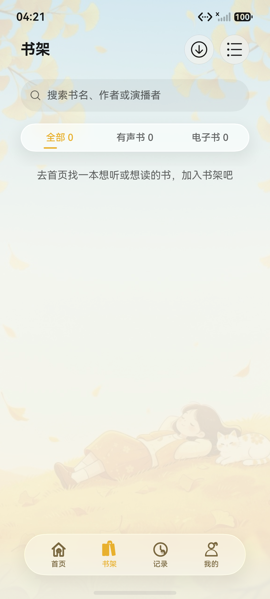
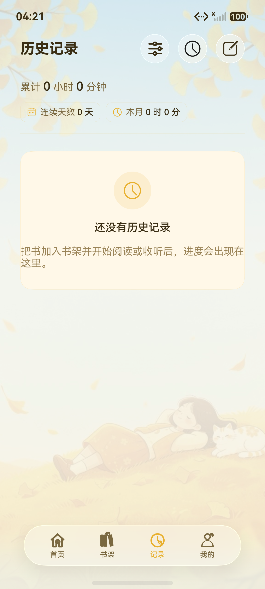
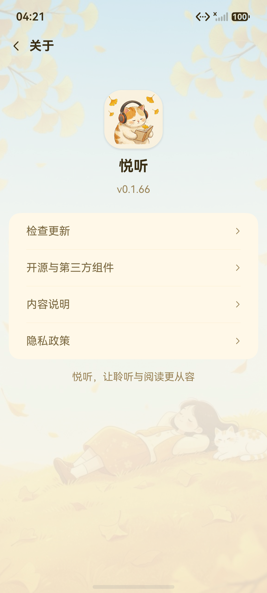

悦听
悦听，让聆听与阅读更从容
关于悦听
悦听是面向 HarmonyOS 手机、平板与电脑的本地优先听书与小说阅读应用。书源自己导入，本地电子书和音频也能直接进书架；想听就听，想读就读，进度留在本机。
【书源与本地文件】 支持导入书源文件、链接，也可通过系统「使用悦听打开」导入本地音频、TXT、EPUB、MOBI、HTML 与 ZIP。小说与有声书放在同一书架，可按分组整理。
【听书】 章节切换、进度续播、0.5×–3× 倍速、片头片尾跳过与睡眠定时。支持锁屏收听、系统媒体控制与桌面播放卡片。
【阅读】 可调字号、行距、边距、翻页与背景；支持书签、替换净化与位置恢复。在线小说也能本机朗读，调节音色与语速。
【发现与备份】 首页可浏览各平台公开榜单，或使用已启用书源的推荐与分类。登录华为账号后，可将书架与进度备份到个人云空间；也支持本地备份。
说明：悦听不内置在线书库。在线搜索、阅读与收听需自行导入合法可用的书源；本地文件可直接导入。第三方内容是否可用，以其服务与授权为准，请在许可范围内使用。
应用截图


